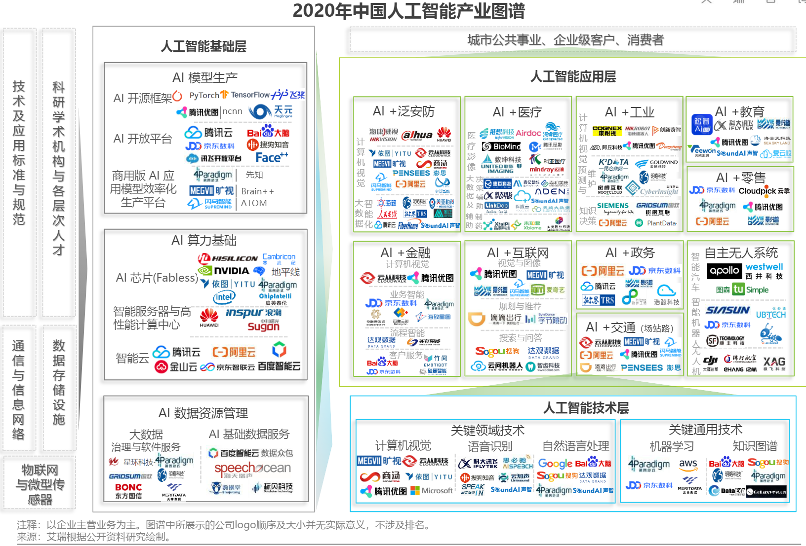
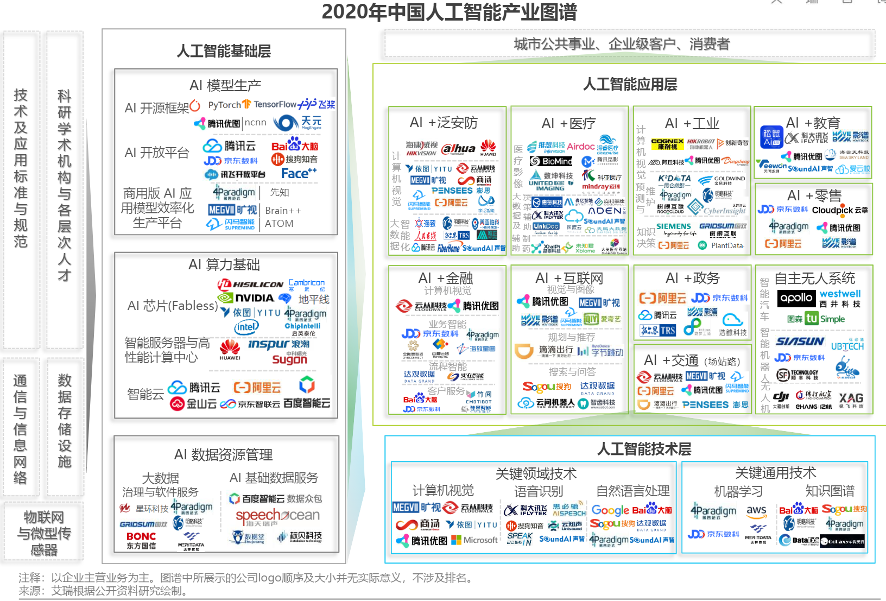

5.1. AI行业分析¶
CB Insights调研出2019年人工智能行业25大趋势
 1 
|AI-100-startup-2020\ |\ `12 <https://www.cbinsights.com/research/2020-top-100-ai-startups-where-are-they-now/>`__
|Most-Valuable-AI-Startups-V3\ |\ `13 <https://www.cbinsights.com/research/most-valuable-private-ai-companies/>`__
|AI领先企业主要投资领域|
1 
|AI-100-startup-2020\ |\ `12 <https://www.cbinsights.com/research/2020-top-100-ai-startups-where-are-they-now/>`__
|Most-Valuable-AI-Startups-V3\ |\ `13 <https://www.cbinsights.com/research/most-valuable-private-ai-companies/>`__
|AI领先企业主要投资领域|
5.1.1. 市场规模¶
比如，深圳市人工智能行业协会发布的《2019 人工智能产业发展白皮书》中提出：预计到 2020 年，我国人工智能市场规模约 990 亿元。如果你是人工智能行业的产品经理，就可以通过整体的规模来倒推自己产品的规模了。 9
5.1.2. 2020 AI Hype Cycle¶
Fig. 5.1.1 2020人工智能技术成熟度曲线报告¶
新内容： 4
健康护照（健康码）
形成性人工智能：一种能够用动态变更对情况作出响应的AI。比如可随时间动态适应的AI，以及可生成新颖的模型来解决特定问题的技术等。
人工智能增强设计
复合人工智能
嵌入式人工智能
生成性人工智能：一种可以创建新颖内容（图像，视频等），或者变更已有内容的AI。新生成的产物跟原始的很像，但不完全相同。这项技术可生成深度伪造的内容，可能会衍生出严重的假信息并带来名誉风险，预计在未来五年内，伪造内容会越来越多。8
负责任的人工智能
人工智能增强开发
自我监督学习
小数据
复合型AI
删除： 7
与去年相比，Gartner将13种技术删除、重新分类或者转移到其他技术曲线中，例如今年Gartner将支持VPA的无线扬声器从所有曲线中删除;AI开发人员工具包现在被分类到AI开发人员和教学工具包类别下;AI PaaS现在属于AI云服务;与AI相关的C&SI服务、AutoML、可解释AI（2020年划归到负责任的AI类别下）、 图形 分析、强化学习移至2020年数据科学和机器学习技术成熟度曲线中;会话式用户界面、 语音识别 、虚拟助理转至2020年自然语言技术成熟度曲线中;量子计算移至2020年计算基础设施技术成熟度曲线中;机器人流程自动化软件从AI技术成熟度曲线中删除。
5.1.5. 优势：极快、极简¶
人工智能可以处理人1秒中可以想出答案的问题，这个问题还需要有以下几个特点：大规模，重复性，限定领域，快速反馈。
人工智能产品设计要以操作极度简单为标准，但是前端的简单代表后端的复杂，系统越复杂，才能越智能。
同样，人工智能的发展依赖于产业生态的共同推进，上游芯片提供算力保障，中游人工智能厂商着力研发算法模型，下游应用领域提供落地场景

Fig. 5.1.3 趋势¶
5.1.6. 分工 10¶
5.1.6.1. 基础设施提供者¶
基础设施提供者，为整个产品体系提供了计算能力、产品与外界沟通的工具，并通过基础平台实现支撑。比如当前的阿里云、腾讯云、百度智能云，等等AI基础设施平台，我们只需要购买其服务，就可以基于平台现有的软硬件和模型算法，实现企业的个性化AI产品打造。
5.1.6.2. 数据提供者¶
数据提供者是体系的数据来源，为后续的数据处理提供充足的“养料”。比如一些大数据公司、广告公司，他们拥有者丰富的数据资源，在以前这些数据可能只会应用于企业内部的角色分析，但是如今却可以将这些数据进行清洗，为第三方企业提供数据服务，例如数据增补、数据开源、以及数据销售。不过鉴于数据安全，国家政策会在一定程度上限制，但这并不影响人工职能的发展。
5.1.6.3. 数据处理者¶
数据处理者，代表着各种人工智能技术和服务提供商，主要负责智能信息表示与形成、智能推理、智能决策及智能执行与输出等工作。数据处理者，在某个智能领域拥有成熟的解决方案，例如旷世科技（Face ++，致力于图像识别领域）、科大讯飞（强大的智能语音服务商），数据处理者能够帮助第三方快速进行AI产品方案的落地。
5.1.6.4. 系统协调者¶
系统协调者，负责系统的集成、需求的定义、资源的协调、解决方案的封装，以及除研发以外一切可以保障人工智能产品顺利运行和再行业落地所需的工作；系统些调者的主要的目标就是实现AI产品服务的商业化落地，也是保障前三个角色价值落地的根本。
我们从数据流开始说起，人工智能的产品体系是一个动态流程，本质上是围绕数据采集、存储、计算展开的。
数据提供者使用各种手段获得原始数据。
数据处理者对数据进行加工。
数据处理者进行模型训练，获得可以使用对模型。
用模型对新数据进行预测。
“数据–信息–知识–智慧”的过程，再随着动态循环，就是“训练–推断–再训练–再推断”的过程。产品经理需要完成系统集成、需求定义、资源协调、解决方案封装的保障工作。
5.1.7. BAT¶
百度A（AI）B(Big data)C(Cloud)战略，阿里腾讯也有各自云服务，大数据中心，人工智能实验室，这些大公司胜在基础架构层、数据量和资本优势上，拥有大量的人工智能科学家，可以持续优化算法，提升算法模型的准确度。
5.1.8. 准确性¶
5.1.8.1. 需要达到99.9999%¶
如手术机器人，自动驾驶技术，智慧交通等，这些产品和服务直接关系到人的生死，要求具有极高的准确度，需要AI科学家持续的优化，只有达到近乎百分之百的准确度才会商用。
5.1.8.2. 达到99%或者95%就可以¶
如面部识别，语音机器人，无人机农药喷洒，艺术设计，搜索引擎，精准营销等，这些产品和服务对于精确度要求不高，因为即使不精确也不会直接造成人员伤亡。
5.1.9. 垄断程度¶
5.1.9.1. 高¶
行业的垄断程度越高，头部公司的体量越大，最初可能因为缺乏AI技术而采购技术，当技术环境成熟，BAT和google这类公司开源了大量技术后，行业垄断型公司会则会搭建自己的AI团队，搭建自己的大数据，云计算和AI实验室，以运营商行业为例，资源垄断型市场，三家独大，每家都在搭建自己的大数据分析平台，也在搭建自己的人工智能实验室。
5.1.9.2. 低¶
如衣食住行相关的制造业和零售行业，因为分散，他们有需求，但是没有足够体量和资本自己搭建AI团队，所以他们会将AI技术作为一项工具，以合理的价格采购成套服务，来实现+AI的升级。
如同当年的互联网+和+互联网一样，也会演化出AI+和+AI的发展方向。
5.1.9.3. 象限图¶
我认为第一象限因为BAT拥有科学家优势，虽然垄断程度高的企业很有钱，但是因为BAT有数据优势和科学家优势，在这个领域BAT优势明显，可以向企业提供独特的AI服务，提升垄断企业效率，这部分产品需要靠AI科学家驱动。
第三象限虽然技术门槛低，垄断程度低，会出现大量小AI公司进入这个市场，BAT进入这个市场拥有足够的品牌优势，因为市场需求量较大，BAT可以考虑做开放平台，为有垂直领域的AI公司体统底层服务，如果自己来做，这部分服务和产品将是运营和产品来主要驱动。
第二象限暂时来看不太适合进场，第四象限垄断企业会自己组建AI团队来做，我们能看到，手机制造这个还不算垄断的行业中，因为资本实力雄厚，各个厂家已经在组建自己的AI研发团队。

Fig. 5.1.4 产品象限¶
5.1.10. 应用场景2¶
1.场景比较规范，2.需要经验， 3.且数据量大，4.但是反复度高的工作岗位，5.如果监管准入门槛比较低就更好。 1和5可促进快速落地，2、3、4适合深度学习复现场景。
医疗+AI，门槛着重考虑；安防+AI，门槛重在渠道，和海康；无人驾驶，需要规范，市场、大众、政府、产品供应、交通设施等都需要规范。
5.1.11. 2B¶
5.1.11.1. 民营企业¶
赚更多的钱
转型的决心和行动力:只要技术是有用的，可以提升效率或压缩成本的
途径：BAT可以考虑在尽可能多民营企业家聚集的场合，推广真实高效的+AI产品和服务
5.1.11.2. 国营企业¶
国营企业即承担创造价值的责任，也同时承担着保证国有资产不流失的责任，组织内部员工多是对上级和自己的职位负责，所以创新一定要稳妥
用友和亚信等软件开发团队多是长期驻厂，提供运维服务和新需求开发
核心诉求是不犯错，未必有功，但求无过
5.1.11.3. 创业公司¶
AIStartups: https://github.com/lipiji/AIStartups
5.1.12. 上市¶
截至3月12日，CV四小龙中，旷视和依图2家都中止过上市进程；智能语音领域的云知声在问询后被终止；最烧钱的AI芯片领域短时间难有企业上市；营收稍好的硬件领域，也有优必选等企业折戟IPO。
https://www.jiemian.com/article/5806409.html
从2020年全球知名的AI芯片企业——Wave Computing 公司破产，AI企业再难获得VC亲睐，独立造血不足的情况，第一批AI公司甚至已经开始倒下，现在对于活着的AI来说，能不暴雷已经算是发展行情不错。
最近，东南亚电商平台Shopee 3月份发布的财报坐实，原依图科技CTO颜水成已在2020年末离开，加盟Shopee。而据内部人士消息，格灵深瞳CTO邓亚峰也已经离职。核心高管离职，对拟上市企业无疑是重大打击。
当下的情况是，投了很多资金、寄于厚望的AI独角兽近乎全部折戟上市，也算是投资人继O2O后，又押错的一个时代。强如李开复也在2020年公开承认，“不少AI公司割了投资人的韭菜。”
5.1.13. More:¶

Fig. 5.1.5 data_AI_industry¶
https://mattturck.com/data2020/
中国人工智能产业发展联盟:http://aiiaorg.cn/ 中国人工智能产业知识产权白皮书2020：http://www.ai-research.online/#/whitepaper/detail/51 https://daxueconsulting.com/category/artificial-intelligence-industry-in-china/
https://www.ulapia.com/reports/search?query=AI https://www.iyiou.com/search?p=%E4%BA%BA%E5%B7%A5%E6%99%BA%E8%83%BD